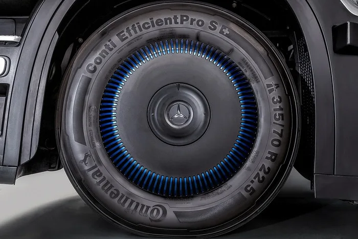
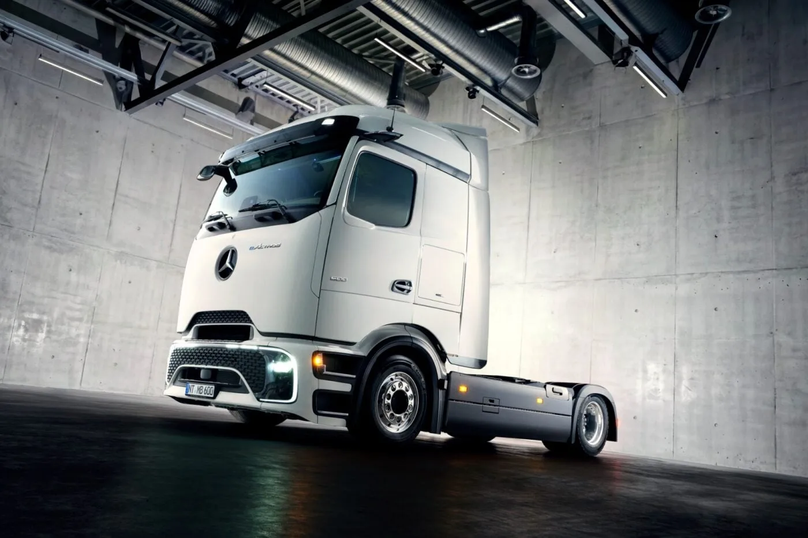
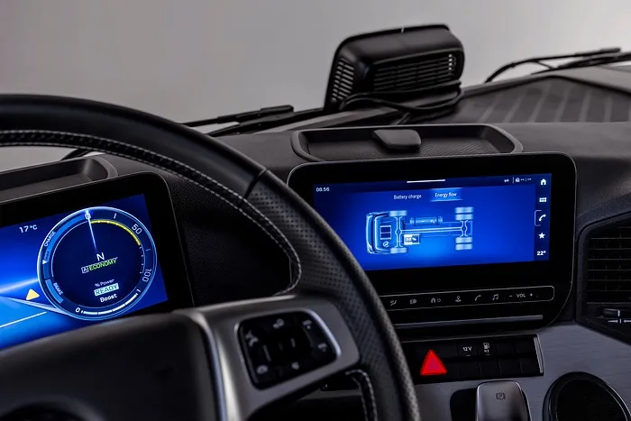

▲ IAA 모빌리티 2026에서 공개된 메르세데스-벤츠 NextGenH2 수소전기트럭 ⓒ Daimler Truck
메르세데스-벤츠 트럭이 독일 하노버에서 열린 IAA 모빌리티(트랜스포테이션) 2026에서 배터리와 수소, 두 전동화 축을 동시에 밀어붙이는 신형 대형 트럭 두 종을 나란히 공개했다. 차세대 액체수소 연료전지 트럭 'NextGenH2 Truck'과, 장거리 대용량 화물 운송에 특화된 저상형 배터리 전기트럭 'eActros 로우라이너(Lowliner)'다.
1. NextGenH2 트럭 — 액체수소로 1000km 이상 항속거리
NextGenH2 트럭은 메르세데스-벤츠 트럭의 수소 전동화 로드맵에서 한 단계 진전된 모델이다. 액체수소(LH2) 저장 방식과 다임러 트럭·볼보 트럭의 합작사 셀센트릭(cellcentric)이 개발한 BZA150 연료전지 시스템을 결합해, 총 85kg의 액체수소를 저장하는 2개의 탱크를 완전히 채웠을 때 1000km를 넘는 항속거리를 확보했다고 다임러 트럭은 밝혔다. 액체수소는 기체수소 대비 부피 밀도가 높아 동일한 탱크 공간에 더 많은 수소를 담을 수 있고, 10~15분이면 완충이 가능하다는 것이 회사 측 설명이다.
차체에는 운전자 편의성을 높인 프로캐빈(ProCabin), 통합형 e-액슬, 최신 멀티미디어 콕핏, 그리고 최신 안전·운전자 보조 시스템 등 이미 양산 검증을 마친 구성요소들이 대거 적용됐다. 액체수소 저장과 연료전지 파워트레인이라는 신기술을, 검증된 양산 부품들과 결합해 상용화 리스크를 낮춘 것이 특징이다.
2. 100대 소량생산 — 2026년 말부터 실제 고객 투입
메르세데스-벤츠 트럭은 2026년 말부터 독일 뵈르트(Wörth) 공장에서 NextGenH2 트럭 100대를 소량생산(small-series production)할 계획이라고 밝혔다. 이 물량은 실제 물류 기업의 상업 운행에 투입돼 실차 데이터를 축적하는 데 쓰인다.
독일 물류기업 다크서(Dachser)가 첫 운영사로 이름을 올렸으며, 2026년 12월 말부터 첫 차량이 실제 운행을 시작하고 2027년 중반까지 2대가 추가 투입될 예정이다. 다임러 트럭은 이번 소량생산을 거쳐 2030년대 초반 본격 양산(series production)에 들어간다는 목표를 제시했다.

▲ NextGenH2 트럭에는 대형 화물 운송에 맞춘 전용 타이어가 적용됐다 ⓒ Daimler Truck
3. eActros 로우라이너 — 배터리 전기트럭의 '적재 부피' 해법
같은 행사에서 공개된 eActros 로우라이너는 기존 배터리 전기트럭 'eActros 600'의 파워트레인을 기반으로 하되, 5th 휠(트레일러 연결부) 높이를 낮춰 메가트레일러 연결 시 내부 적재 높이를 최대화한 것이 핵심이다. 부피가 큰 화물을 다루는 물류 업체들에게는 같은 트레일러로도 더 많은 화물을 실을 수 있다는 의미다.
배터리 용량은 두 가지로 나뉜다. eActros 400 로우라이너는 414kWh 배터리에 약 24톤의 적재 중량을, eActros 600 로우라이너는 621kWh 배터리로 약 21톤의 적재 중량과 만재 기준 약 500km의 항속거리를 각각 제공한다. 4x2 트랙터 사양에 휠베이스는 4000mm다.

▲ 저상형 5th 휠 설계로 적재 부피를 극대화한 eActros 로우라이너 ⓒ Daimler Truck
4. 충전 성능과 출시 일정
eActros 로우라이너는 CCS2 방식으로 최대 400kW 급속충전을 지원하며, 2027년 하반기부터는 최대 1000kW급 메가와트 충전(MCS) 옵션이 추가돼 특정 조건에서 10%→80% 충전을 30분 이내로 단축할 수 있다고 밝혔다. 주문 접수는 2026년 3분기에 시작되며, 뵈르트암라인 공장에서의 실제 생산은 2027년 2분기부터 개시된다.
메르세데스-벤츠 트럭의 이번 발표는 배터리와 수소를 이분법적으로 택하지 않고, 주행거리와 충전 인프라 여건에 따라 배터리 전기트럭과 수소연료전지트럭을 병행 투입하는 전략을 재확인한 것으로 풀이된다. 상세 제원은 다임러 트럭 공식 보도자료에서 확인 가능하다.

▲ 최신 멀티미디어 콕핏이 적용된 NextGenH2 트럭의 프로캐빈 실내 ⓒ Daimler Truck
5. 한국의 수소트럭은 지금 어디쯤 — 엑시언트와의 격차
국내에서는 현대자동차가 2020년부터 엑시언트 수소전기트럭을 앞세워 상용화를 이어오고 있다. 다만 국내 판매 대수는 2023년 11대, 2024년 22대, 2025년 13대 수준으로, 연간 수십 대 규모에 머무르고 있다. 엑시언트는 기체수소(350bar) 방식을 채택해 1회 충전 시 항속거리가 약 570km 수준으로, 이번에 공개된 NextGenH2의 액체수소 방식(1000km 이상)과는 저장 방식과 항속거리 모두에서 차이가 있다.
국내 수소트럭 확산이 더딘 배경에는 충전 인프라 부족이 꼽힌다. 대형 화물차가 이용할 수 있는 수소충전소 자체가 많지 않은 데다, 액체수소 충전 인프라는 국내에 아직 상용화되지 않았다. 유럽이 다크서 같은 물류 대기업을 통해 실차 데이터를 축적하며 액체수소 트럭 상용화에 속도를 내는 동안, 국내에서는 기체수소 기반 인프라 확충이 우선 과제로 남아 있는 셈이다.
6. 유럽 대형트럭 시장의 이중 전략 경쟁
볼보 트럭 역시 이번 IAA에서 다임러 트럭과 함께 수소충전 인프라 확대를 위한 협력 방안을 논의하는 등, 유럽 대형트럭 업계 전반이 배터리·수소 투트랙 전략으로 수렴하는 흐름이 뚜렷해지고 있다. 배터리 전기트럭은 충전 인프라가 갖춰진 중단거리 노선에, 수소연료전지트럭은 충전 시간이 짧고 항속거리가 긴 장거리·중량화물 노선에 각각 최적화된 해법으로 자리잡는 모습이다.
메르세데스-벤츠 트럭이 NextGenH2와 eActros 로우라이너를 같은 무대에서 동시에 공개한 것은, 단일 파워트레인에 베팅하기보다 고객사의 운행 조건에 맞춰 선택지를 넓히겠다는 의지로 읽힌다. 2026년 말 다크서의 첫 실차 운행 결과가 향후 수소트럭 상용화 속도를 가늠할 시금석이 될 전망이다.